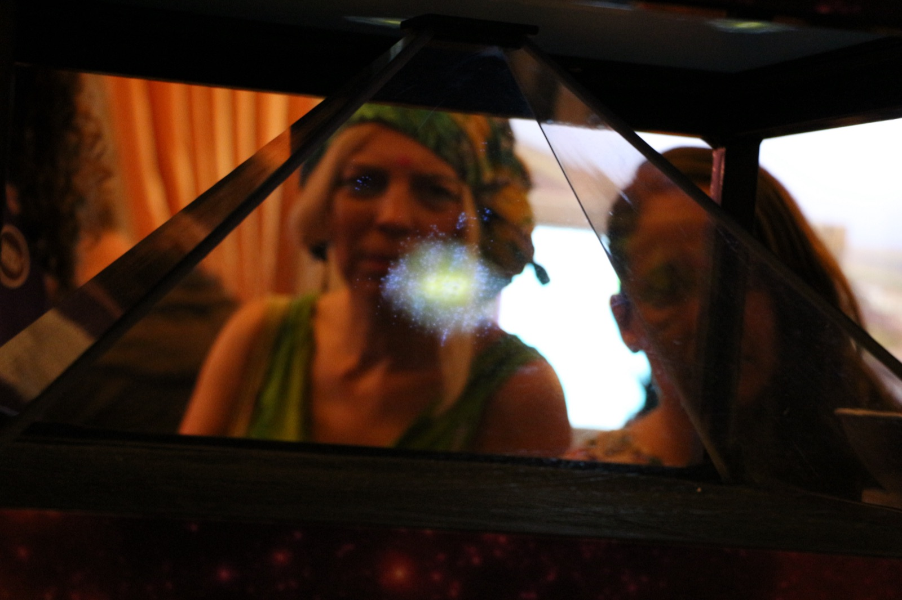
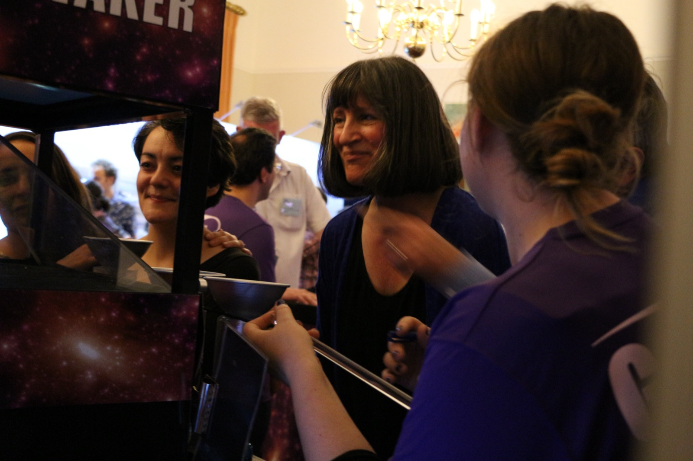
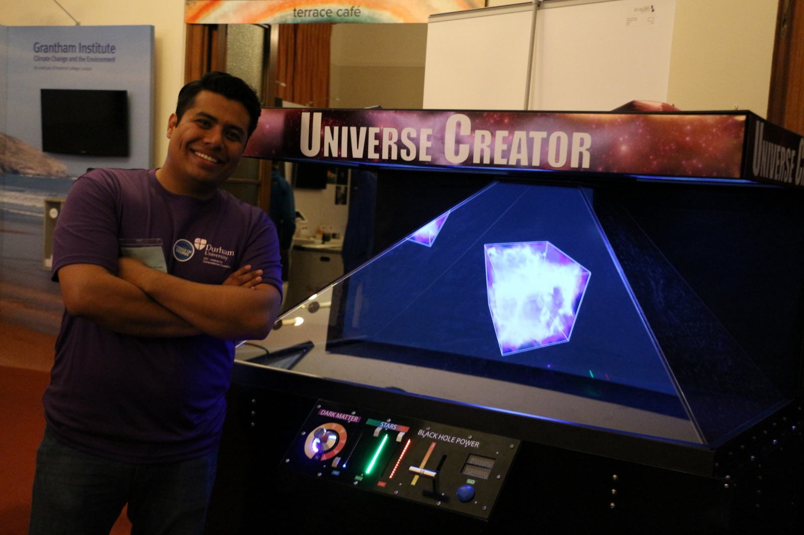
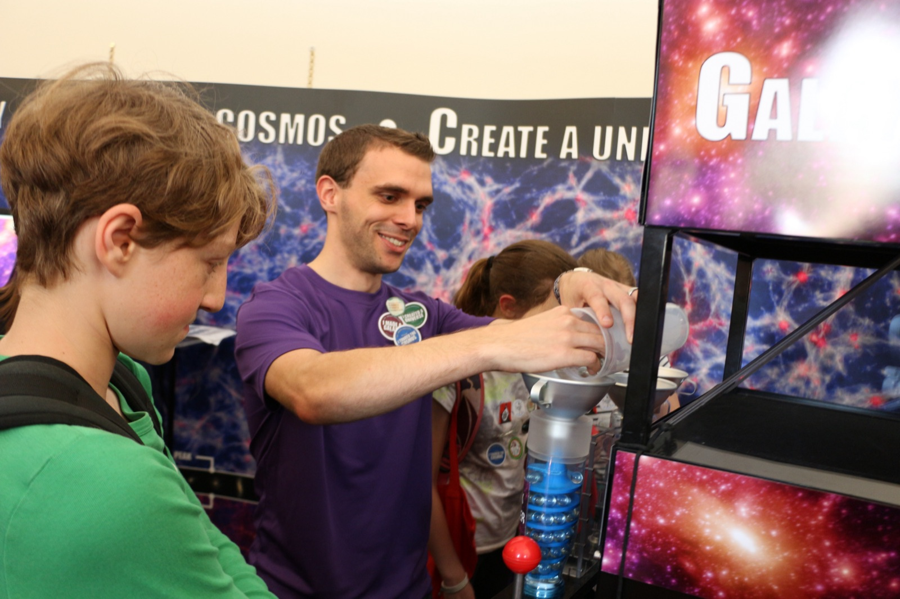
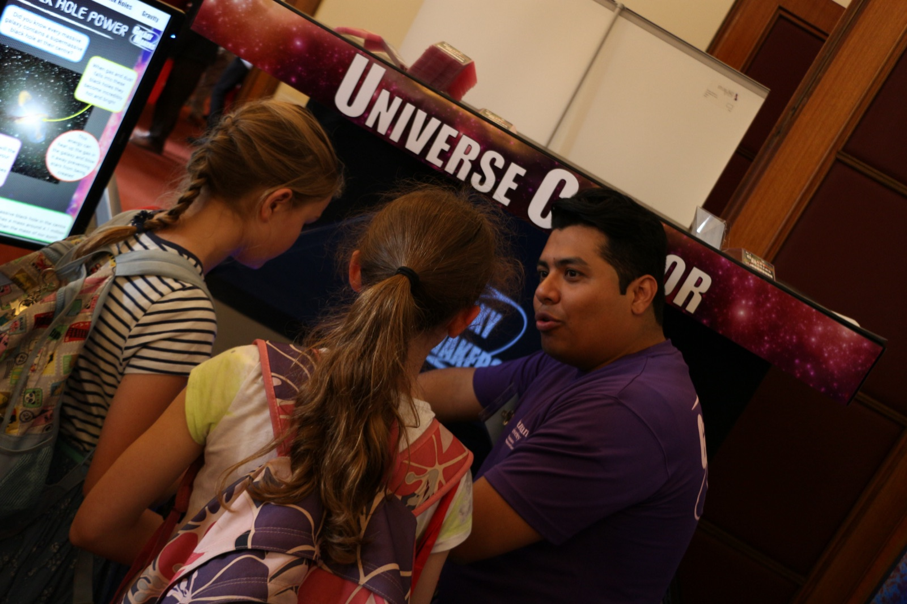
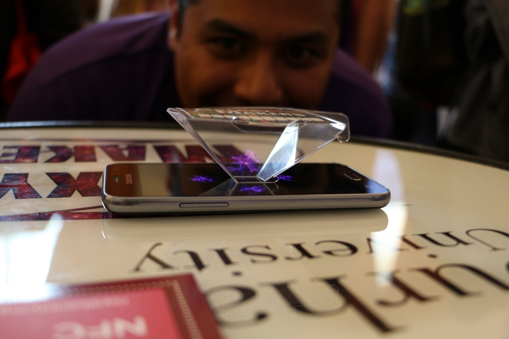
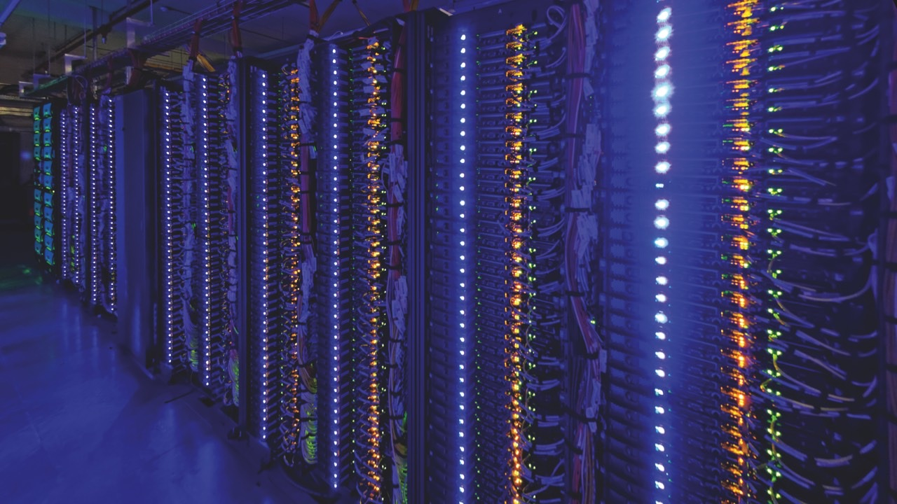

About Galaxy Makers
The Galaxy Makers exhibit, brought to you by Durham University, aims to explain recent breakthroughs in our understanding of how galaxies were made. Participants are able to make their own holographic galaxies, run their own computer simulations and take a virtual reality tour of the cosmos!






Astronomers and cosmologists have recently made real progress in understanding how galaxies were made by using computer simulations. The computer simulation is the cosmologist's laboratory bench. Scientists usually learn how things work by doing experiments, but real galaxies are simply too big to build in the laboratory! We use computers to create virtual universes where we apply the laws of physics and our predictions or "assumptions" about various aspects of the universe, such as what happens when stars explode and if supermassive black holes are powerful enough to heat and remove gas from galaxies. Time is then rapidly sped up so that we can follow the life story of the galaxies in our simulated universe. If galaxies in the simulated universe look like those in the real universe, then our assumptions were correct. If it doesn't, then something was wrong.
The Galaxy Makers exhibit contains interactive demonstrations, to suit all ages, so that participants can get a "hands-on" experience of what it is like to work with computer simulations of the universe. There are three main activities which aim to cover three main questions:
1. What is a galaxy? Our Galaxy Maker activity allows the participants to make their own holographic galaxy by following various galaxy recipes to weigh out the "components" (ingredients) of different galaxies. After measuring out these components and pouring them into the various chutes of the Galaxy Maker, a hologram will appear in front of them. Some of the messages we aim to portray with this activity are that galaxies are vast collections of stars, gas and dark matter and that galaxies come in different shapes and sizes; for example, our Milky Way is an example of a large spiral galaxy.
2. What happens during the life of a galaxy? Our virtual reality Tour of the Cosmos allows participants to submerge themselves right inside a revolutionary computer simulation called "EAGLE". This unique experience flies the passengers through space and time whilst the audio commentary talks you through some of the key events of creating a galaxy.
3. How do we simulate galaxies? Our Create a Universe activity allows participants to run their own computer simulations. The participants use various knobs and levers to make their own "assumptions" about the universe. For example, it is possible to change the amount of energy released by black holes. Once these decisions have been made the computer simulation is projected as a hologram. If these assumptions are unrealistic you may end up with a universe that is too hot or perhaps with no galaxies at all! Participants will get to learn about how the experts have used "experiments" to understand how the universe works.
All of our activities have an online version where you can try for yourself whether you have been to the Galaxy Makers exhibit or not.
The exhibition video below explains how computer simulations are used to understand how galaxies are made and introduces some of the Galaxy Makers team. They also explain why they think it is exciting to try to understand "How do you build a galaxy?"
About The Simulation & Institute
The Institute for Computational Cosmology (ICC) was established in 2002, when the Ogden Centre for Fundamental Physics was established at Durham University. The ICC addresses some of the biggest questions in science: What is the dark matter that dominates the matter content of the Universe? Why is the expansion of the Universe speeding up? How did galaxies form and evolve? These questions are tackled using computer simulations and by mapping the content of the universe in huge galaxy surveys, such as DESI and Euclid. The ICC is the lead UK member of the Virgo Consortium, an international collaboration which carries out simulations of structure formation in the universe, and is the host to the Cosmology Machine, which is part of the UK's national astrophysics computer, DiRAC-II. Along with the Centre for Extragalactic Astronomy, Durham represents one of the largest concentrations of expertise in extragalactic astronomy in Europe.

This supercomputer called COSMA-V does not just look pretty, it is very powerful. In one second, COSMA-V can do more than 139 trillion additions and multiplications. COSMA-V can store the same data as 80,000 iPods, corresponding to 1.5 million feature-length movies. Researchers at the ICC (Durham University) make extensive use of COSMA-V to perform state-of-the-art cosmological simulations.
The EAGLE (Evolution and Assembly of GaLaxies and their Environment) simulation project represents a major breakthrough in our efforts to understand how galaxies form and evolve in a Universe in which the matter content is dominated by dark matter. Perhaps surprisingly, modelling the "normal" matter in the Universe turns out to be far more difficult that following the evolution of the dark matter. The important physics for the dark matter is gravity. The equation describing the law of gravity was published in 1686. The normal matter, on the other hand, experiences a much wider range of effects. For many of these we cannot write down the equation that describes them. One spectacular process which helps to shape galaxies is the death of some stars in a supernova. This event puts huge amounts of energy into the gas within a galaxy and can blast some of this material away before it can form stars. The challenge dealt with by EAGLE was to model these processes for a large sample of galaxies, so that we can see how they affect galaxies of different sizes. This requires a huge supercomputer. The simulation took more than six million hours of CPU time on machines in Durham and Paris. The result is a collection of 10,000 galaxies like the Milky Way or bigger that we can compare to galaxies in the real Universe.
Find out more:
You can also watch this video about searching for black holes in the EAGLE simulation: